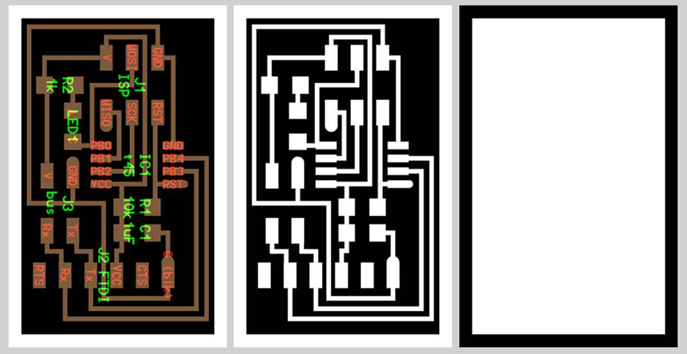
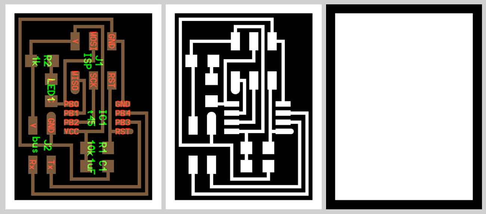

Assignment: Design and build a wired and/or wireless network connecting at least two processors
networking_communications/index.htmlGoal: The aim of this assignement is to network several boards together in the form of a serial bus. The bridge board is connected to a computer with a FTDI cable, the two node boards are connected to the bridge board.
TUTORIALI used: 1 Hello.bus.45.bridge and 2 hello.bus.45.node.
At the beginning, I downloaded the .png files for milling 2 nodes and 1 bridge. The only difference between the boards is that the bridge has 6 extra pins for connecting to the FTDI cable, while the nodes have only a 4 pin header to communicate. This is also the node that will power the rest.
BRIDGE: Hello.bus.45.bridge 
COMPONENTS:
- 1 Attiny 45
- 1 Header 6 pins
- 1 Header 4 pins
- 1 Header FTDI 6 pins
- 1 Red Led
- 1 Resistor 1 K
- 1 Resistor 10 K
- 1 Capacitor 1 uf
NODES: hello.bus.45.node 
COMPONENTS:
- 1 Attiny 45
- 1 Header 6 pins
- 1 Header 4 pins
- 1 Red Led
- 1 Yellow Led
- 1 Resistor 1 K
- 1 Resistor 10 K
- 1 Capacitor 1 uf
Tools: Roland MonoFab SRM20
Table size (LxP): 232.2 x 156.6 mm
Distance from collet tip to table: 232.2 x 156.6 mm
Use the hello.bus.45.c code and makefile reported in the Fab Academy website. Every single board has to be programmed singly. You have to program the C code for each board, Each node, in fact, needs a different node id number.
- In the C code, define node_id '0' and save the file. Then connect the bridge board to computer with the FTDI header and program it using the FabISP, flash the bridge board as node 0: sudo make -f hello.bus.45.make program-usbtiny.
- Modify the C code, define node_id '1' and save the file. The bridge board to power node boards and connect them to TX and RX. Then flash the node board as node 1: sudo make -f hello.bus.45.make program-usbtiny.
- In the the C code, define node_id '2', and repeat the process.
- Connect the boards and plug the bridge board to the computer with a FTDI cable.
- Connect them to Tx and Rx and flash the first node board as node 1.(type in terminal: sudo make -f hello.bus.45.make program-usbtiny).
- Repeat the same thing for the second node board as node 2.
- Open the Arduino IDE and go to Tools>Serial Monitor to open the serial monitor. Into the serial port enter the number of a node and "send" it. After all the LEDs light up once, the board that corresponds to the number that is entered into the serial port, should light up again.
Notes:
- Make sure the baud rate is set to 9600;
- Each board needs to have a different node id;
- Problems with noise of nodes. Using the Arduino serial monitor the nodes name showed was unusual. I checked the solder points, changed the connectors and rolled the wires. This way i was able to have a cleaner output.
{kind=link}
{kind=link}
{kind=link}
{kind=link}
{kind=link}
{kind=link}